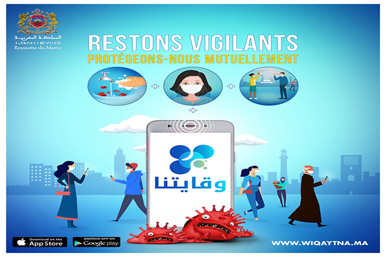

Comprendre le Covid-19
L'ORIGINE DU VIRUS
Le COVID-19, un nouveau coronavirus
Le virus identifié en janvier 2020 en Chine est un nouveau coronavirus, nommé SARS-CoV-2. La maladie provoquée par ce coronavirus a été nommée COVID-19 par l’Organisation mondiale de la Santé - OMS. Depuis le 11 mars 2020, l’OMS qualifie la situation mondiale du COVID-19 de pandémie ; c’est-à-dire que l’épidémie est désormais mondiale.
Les coronavirus sont une famille de virus qui provoquent des maladies allant d’un simple rhume (certains virus saisonniers sont des coronavirus) à des pathologies plus sévères (comme les détresses respiratoires du MERS, du SRAS ou du COVID-19).
Le COVID-19 est dangereux pour les raisons suivantes :
il est très contagieux : chaque personne infectée va contaminer au moins 3 personnes en l'absence de mesures de protection ;
une personne contaminée mais qui ne ressent pas encore de symptômes peut contaminer d’autres personnes.
Les symptômes
Le COVID-19 peut se manifester par :
- la fièvre ou la sensation de fièvre (frissons, chaud-froid) ;
la toux ;
- des maux de tête, courbatures, une fatigue inhabituelle ;
une perte brutale de l’odorat (sans obstruction nasale), une disparition totale du goût, ou une diarrhée ;
- dans les formes plus graves : difficultés respiratoires pouvant mener jusqu’à une hospitalisation en réanimation voire au décès.
La transmission
La maladie se transmet par ce qu’on appelle les gouttelettes : il s’agit de sécrétions invisibles qui sont projetées lors d’une discussion, d’éternuements ou en toussant. Les postillons correspondent aux gouttelettes visibles, mais la plupart des gouttelettes ne le sont pas.
La maladie se transmet par ce qu’on appelle les gouttelettes : il s’agit de sécrétions invisibles qui sont projetées lors d’une discussion, d’éternuements ou en toussant. Les postillons correspondent aux gouttelettes visibles, mais la plupart des gouttelettes ne le sont pas.
Le contact avec des mains non lavées ou des surfaces souillées par des gouttelettes est également à risque de contamination.
La maladie se transmet :
- par projection de gouttelettes (comme les postillons) contaminées par une personne porteuse : en toussant, éternuant ou en cas de contacts étroits en l’absence de mesures de protection (distance physique, mesures barrières, port du masque). Les gouttelettes contaminées sont inhalées par la personne saine, et déclenchent la maladie
- par contact direct physique (poignée de main, accolade, bise...) entre une personne porteuse et une personne saine. Le virus est ensuite transmis à la personne saine quand elle porte ses mains à la bouche.
- par contact indirect, via des objets ou surfaces contaminées par une personne porteuse. Le virus est ensuite transmis à une personne saine qui manipule ces objets, quand elle porte ses mains à la bouche.
La meilleure des protections : les mesures barrières et les mesures de distanciation physique.
Luttons ensemble contre le Covid-19
En l’absence de traitement, la meilleure des protections pour vous et pour vos proches est, en permanence, le respect des mesures barrières et de la distanciation physique. En complément, portez un masque quand la distance d’un mètre ne peut pas être respectée.
Restez chez vous
Face à la propagation du coronavirus, le mot d'ordre est clair: «restez chez vous!», a exigé le ministre de l'Intérieur. Concrètement, toutes les personnes qui circuleront devront être en mesure de justifier leur déplacement. Les déplacements tolérés sont ceux entre domicile et travail quand c'est absolument nécessaire, pour aller faire ses courses, pour raison de santé ou encore pour motif familial impérieux ou l'assistance de personnes vulnérables. Des déplacements brefs à proximité du domicile seront également tolérés. Les citoyens pourront toujours pratiquer une activité physique ou sortir son chien mais chacun devra le faire avec parcimonie. Des contrôles fixes et aléatoires seront opérés aussi sur les réseaux de transport.
Coronavirus : le confinement modifie le mouvement de la terre
Dans le monde entier, les rues des villes sont vides car les gens restent à l'intérieur en raison du verrouillage des coronavirus.
Tant de gens restent chez eux que la Terre tremble moins
Des milliards de personnes dans le monde entier restent chez elles à cause de la pandémie de coronavirus.
Le nombre de confinés est tellement important qu'en en fait cela change la façon dont la Terre se déplace.
En raison du confinement, il y a moins de déplacements pour le travail ou les loisirs sur les routes ou par rail, et de nombreuses industries lourdes ont fermé boutique.
En fait, nous sommes si nombreux à en faire moins de mouvement que cela a réduit les vibrations de la croûte terrestre.
C'est assez étonnant si l'on considère que notre planète pèse six milliards de billions de tonnes.
Des chutes spectaculaires
Les scientifiques de l'Observatoire royal de Belgique ont été les premiers à remarquer la baisse, en disant que "les mouvements du sol à des fréquences de 1-20 Hz [plus profondes que le son d'une contrebasse, semblable à un grand orgue] sont beaucoup plus faibles depuis la mise en place des mesures de confinement par le gouvernement".
Les changements ont été remarqués dans d'autres endroits du monde également.
Des sismologues au Népal ont constaté une baisse d'activité, un ouvrier de l'Institut de physique de la Terre de Paris a déclaré que la réduction dans la capitale française était "spectaculaire", et une recherche de l'université Cal Tech aux États-Unis a décrit la baisse à Los Angeles comme "sérieusement sauvage".
La chute spectaculaire de l'activité sismique au Népal peut être observée dans ce graphique.
Un air plus pur, des mers plus calmes
Ce n'est pas la seule façon dont le coronavirus - en affectant notre mode de vie - change le monde naturel.
Les satellites ont détecté une diminution du dioxyde d'azote, gaz polluant émis par les voitures, les camions, les bus et les centrales électriques.
Les épidémies de coronavirus sur plusieurs navires de croisière signifient que presque toute la flotte mondiale est désormais à quai, ce qui rend les océans sensiblement plus calmes.
Le monde est aussi plus calme.
Les scientifiques qui mesurent uniquement le bruit de fond quotidien de nos villes et ceux qui étudient la profondeur des océans ont constaté une baisse des niveaux sonores.
Des signaux plus clairs
Les nouvelles recherches sismologiques ne signifient pas que la Terre a complètement cessé de trembler, mais la différence n'est pas seulement perceptible pour les scientifiques - elle est aussi utile.
L'activité humaine est comme un bruit de fond qui rend plus difficile l'écoute de ce que la Terre fait naturellement.
La croûte terrestre peut avoir jusqu'à 70 km d'épaisseur, mais elle tremble toujours à cause de ce que nous faisons.
"Vous obtiendrez un signal avec moins de bruit au sommet, ce qui vous permettra d'extraire un peu plus d'informations de ces événements", explique le sismologue Andy Frassetto sur le site web des Incorporated Research Institutions for Seismology à Washington.
Certains chercheurs ont même réussi à déterminer avec précision la cause de la baisse dans leur région.
Stephen Hicks, qui travaille à l'Imperial College de Londres, attribue cette baisse à la diminution du trafic sur la M4 - une autoroute qui relie Londres au Pays de Galles.
"Il semble assez clair que ces derniers jours, l'augmentation du niveau de bruit à l'aube est beaucoup moins forte que ces dernières semaines", a-t-il écrit sur Twitter.
Je suppose que cela est dû à une heure de pointe matinale beaucoup plus faible - moins de gens qui font la navette et pas de course d'école".
Changements saisonniers |
Ces changements ne sont pas sans précédent.
Comme on peut s'y attendre, l'activité humaine varie normalement au cours de chaque jour et de chaque année, car les gens sont moins actifs à certaines périodes.
La nuit est plus calme que le jour et les baisses ont lieu aux alentours des grandes fêtes et festivals.
Mais ce qui se passe dans le monde entier est une réduction de l'activité qui dure des semaines, voire des mois, et qui n'est normalement observée que brièvement à Noël dans les pays chrétiens.
Wiqaytna

Wiqaytna est une application marocaine gratuite de notification d’exposition au Coronavirus « COVID-19 ».
Elle permet de notifier son utilisateur si un autre utilisateur qui se trouvait à proximité durant les 21 derniers jours est confirmé positif au « COVID-19 ».
L’application s’inscrit dans la stratégie nationale de lutte contre la pandémie du Coronavirus « COVID-19 ».
Comment Wiqaytna nous aide à nous protéger ?
Protégez-vous
Si vous avez été à proximité d'une personne confirmée positive au « COVID-19 », vous serez notifiés et pris en charge rapidement.
Protégez vos proches
Étant notifié rapidement, vous éviterez de contaminer vos proches,amis et collaborateurs.
Protégez votre pays
En se protégeant mutuellement nous limiterons la propagation du virus.